Ya hemos visto el funcionamiento y los elementos de los videojuegos Pong y Maze en Scratch.
En los apartados anteriores, hemos descubierto el funcionamiento de estos videojuegos para estar en capacidad de aplicar estos conocimientos en nuestro reto de crear nuestro propio videojuego.
Ahora vamos a hacer algo similar con el videojuego del Fish Chomp, comenzaremos recordando sus características más destacables y finalmente aprenderemos cómo podemos modificarlo.
Atención, ¡empezamos!
¿Cómo funciona el videojuego Fish Chomp?
Recuerda que ya exploramos el funcionamiento del videojuego Fish Chomp en Scratch en la página 4. Explorando los videojuegos, ahora vamos a analizar su funcionamiento, las dinámicas del juego y una posible programación para cada una de ellas.
Funcionamiento de la mecánica fundamental
El videojuego Fish Chomp consiste en mover un pez grande a lo largo del fondo marino con el objetivo de morder peces pequeños. El objetivo consiste en morder el mayor número de peces pequeños antes de que finalice el tiempo.
´NOTA: El pez grande se desplaza con el ratón.
A continuación te explicamos cada uno de elementos del videojuego Fish Chomp.
Elementos
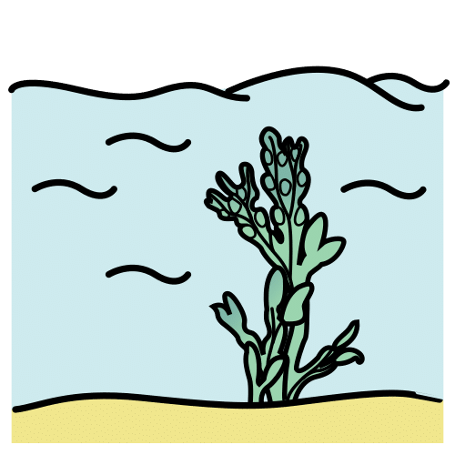
Te voy a mostrar los elementos y las acciones del juego. El primer elemento es el escenario que representa un fondo marino.
Puedes elegir entre las imágenes disponibles en la galería de fondos para escenarios de Scratch. El resto de los elementos podemos también obtenerlos de la galería de Scratch.
Por medio del siguiente esquema podemos descomponer el videojuego Fish Chomp en sus elementos para poder entender su funcionamiento de una forma más sencilla.
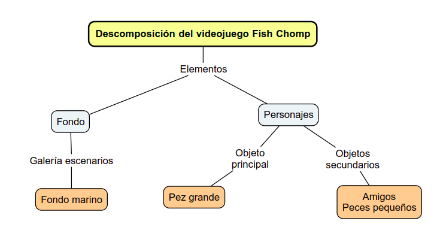
A continuación te explicamos cada una de las dinámicas para el videojuego Fish Chomp.
Dinámicas
En la siguiente imagen puedes ver un posible esquema con la descomposición del videojuego Fish Chomp en sus elementos y acciones.
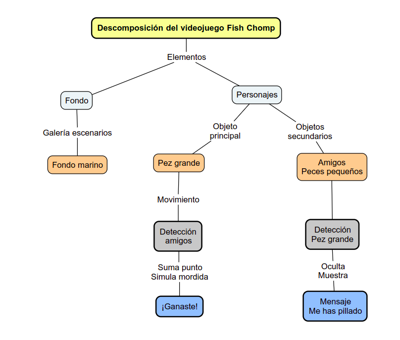
A continuación te explicamos cada una de estas dinámicas y sus bloques de programación para el videojuego Fish Chomp.
Movimiento del pez hambriento
Podemos controlar el movimiento del personaje principal con el puntero del ratón.
El pez hambriento está programado para que se mueva, al hacer clic en la bandera verde, siempre que el puntero del ratón se encuentre a una distancia mayor de 10 pasos. Por siempre, moverse en la "dirección del puntero del ratón" del ordenador.
Recuerda restringir los movimientos de este personaje a "izquierda-derecha" para evitar que el pez rote en todas direcciones.
En la siguiente imagen puedes apreciar unos posibles bloques de programación para esta dinámica.
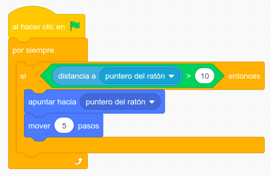
Movimiento de los personajes secundarios
En un videojuego también es importante la programación del movimiento de los personajes secundarios.
Lo más sencillo es diseñar un movimiento aleatorio de estos objetos, al hacer clic en la bandera verde, se muestran y apuntan en una dirección cualquiera.
Por siempre, estará en movimiento con una velocidad más baja que el personaje principal para facilitar el objetivo del juego y podemos añadir giros continuos con valores aleatorios acotando los valores extremos de los mismos.
Añadimos un bloque rebotar si se toca un borde y así evitamos que el personaje se atasque en un borde.
Recuerda restringir los movimientos de estos personajes a "izquierda-derecha" para evitar que roten en todas direcciones.
A continuación puedes ver una imagen con una posible combinación de bloques de programación para esta dinámica.
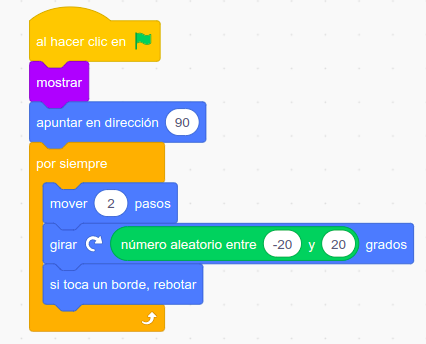
Mordida del Pez hambriento
La mordida del pez, implica una dinámica que involucra a dos objetos, el que muerde y el mordido.
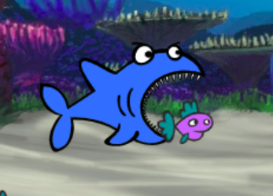
Vamos a tener que programar esta dinámica en los dos personajes. Empezamos por el pez mordedor.
- Al recibir el mensaje de que se ha producido la mordida "Me_has_pillado".
- Se añade un sonido que represente la mordida.
- Se programa un cambio rápido de disfraz del pez para conseguir el efecto de abrir y cerrar la boca.
A continuación, puedes ver una muestra de bloques de programación para esta dinámica.
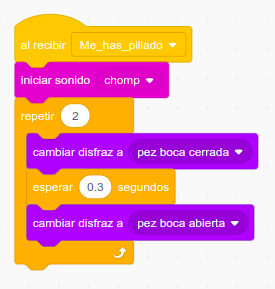
Mordida para el pez pillado
El otro personaje que participa en la mordida es el pez que ha sido pillado y por lo tanto mordido.
Al coincidir el color del cuerpo del pez mordido con el color del pez mordedor se ha conseguido la mordida, así que se envía el mensaje "Me_has_pillado".
Se oculta durante tres segundos el pez para simular ser devorado.
Se programa que aparezca de nuevo por la izquierda del fondo a una altura aleatoria entre los límites verticales del escenario.
En la siguiente imagen puedes apreciar una posible combinación de los bloques de programación para esta dinámica.
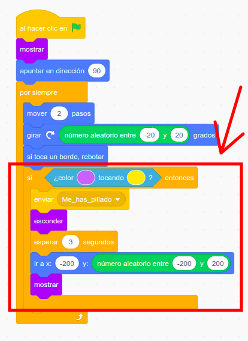
Vamos a comprobar lo que sabes sobre el videojuego Fish Chomp
Selecciona las respuestas correctas y pulsa sobre el botón "responder"
{kind=link}
{kind=link}
{kind=link}
{kind=link}
{kind=link}
Vamos a comprobar lo que sabes sobre las acciones del Fish Chomp
Selecciona las respuestas correctas y pulsa sobre el botón "responder"
{kind=link}
{kind=link}
{kind=link}
{kind=link}
Pantalla de inicio del videojuego
El videojuego es más atractivo si tiene una pantalla de inicio. ¿Cómo la harías con Scratch? Te ayudo:
- Primero haz un boceto de dicha pantalla en tu cuaderno.
- A continuación, píntala con la herramienta Pinta de Scratch.
- Por último, prográmala para que siempre se visualice sólo al iniciar el juego.
Crea los elementos del Fish Chomp
A continuación, sigue las siguientes instrucciones para crear cada uno de los elementos del videojuego Fish Chomp:
Fondo marino
Recurriremos a la galería del Scratch, para elegir nuestro fondo marino. Si no encuentras ninguno que te guste puedes crear el tuyo ¿Te atreves?
El personaje principal
Será un pez grande. Igualmente iremos a la galería de objeto del Scratch, para elegir el personaje principal que formará parte del videojuego.
Podemos filtrar en la galería dentro de la categoría animales, por ejemplo, con la palabra fish. Recuerda que los nombres originales de los objetos en Scratch, están en Inglés.
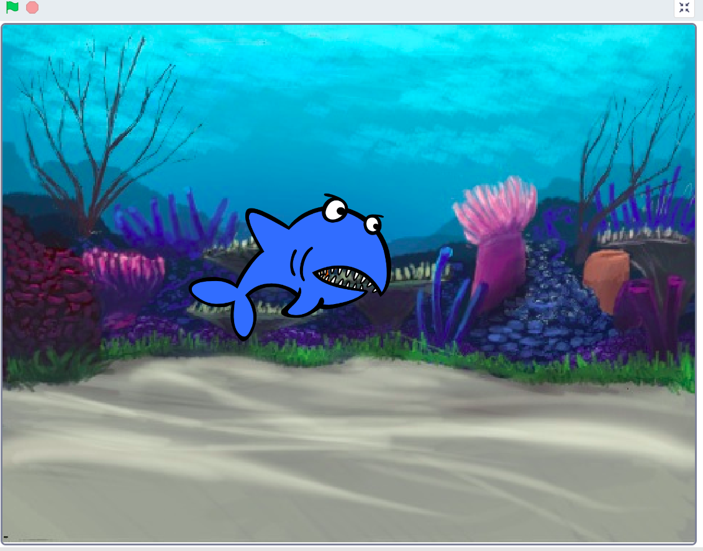
Personajes secundarios
Serán peces de tamaño pequeño.
Al igual que con el personaje principal, iremos a la galería de objetos del Scratch, para elegir los personajes secundarios, tanto amigos como posibles enemigos que formarán parte del videojuego.
Los amigos nos aportarán puntos cuando sean mordidos y los enemigos nos quitarán puntos cuando nos toquen.
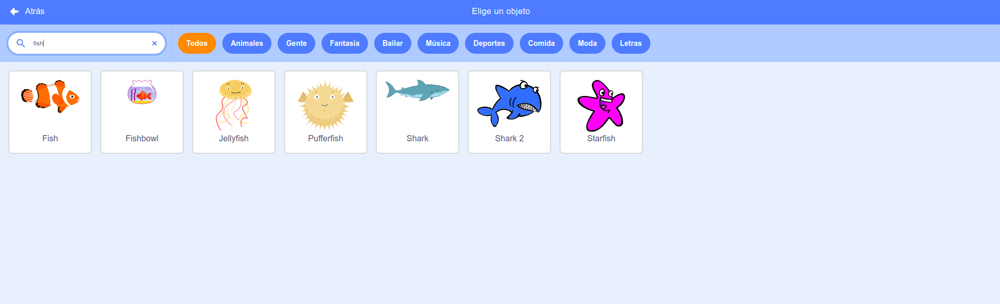
¿Y si añadimos enemigos al juego?
Te propongo crear tu propia versión del videojuego Fish Chomp que contenga personajes enemigos, es decir, otros animales marinos que si tocan al pez hambriento, perderás puntos.
A continuación, te dejo un ejemplo del juego que te propongo. NOTA: El pez grande o hambriento se desplaza con el ratón.
Personaliza tu propia versión utilizando objetos y fondo diferentes al mostrado en el ejemplo.
Kardia dice ¿Quieres saber cómo se crea una versión del juego con enemigos?
En la siguiente versión del juego ten cuidado con el resto de animales marinos, si te tocan pierdes puntos.
´NOTA: El pez grande se desplaza con el ratón.
Si tienes curiosidad por saber cómo esta hecha esta versión, aquí te dejo el enlace al interior del videojuego Fish Chomp.
Funcionamiento de la mecánica fundamental
El videojuego Fish Chomp consiste en mover un pez grande a lo largo del fondo marino con el objetivo de morder peces pequeños, pero ahora sin ser atrapado por el resto de animales marinos. El objetivo consiste en morder el mayor número de peces pequeños antes de que finalice el tiempo.
Pero en esta versión del juego ten cuidado con el resto de animales marinos, si te tocan pierdes puntos.
´NOTA: El pez grande se desplaza con el ratón.
A continuación te explicamos cada uno de elementos del videojuego Fish Chomp.
Elementos
Por medio del siguiente esquema podemos descomponer el videojuego Fish Chomp en sus elementos añadiendo los personajes enemigos.
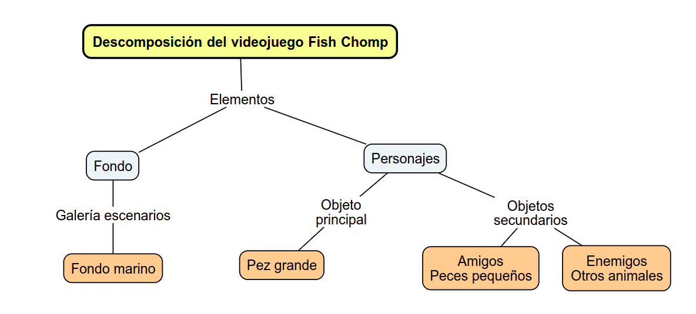
A continuación te explicamos cada una de las dinámicas para el videojuego Fish Chomp.
Dinámicas
En la siguiente imagen puedes ver un posible esquema con la descomposición del videojuego Fish Chomp en sus elementos y acciones, teniendo en cuenta los enemigos.
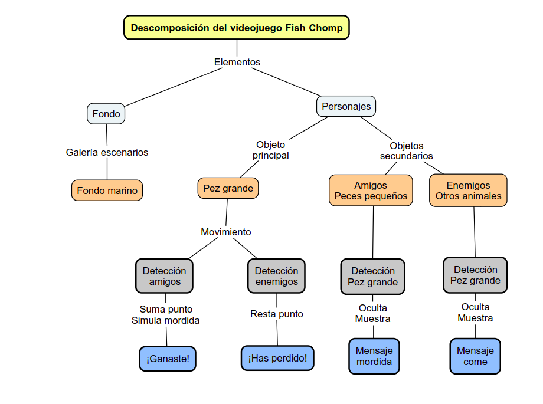
A continuación te explicamos la dinámicas y sus bloques de programación añadidos con los personajes enemigos para el videojuego Fish Chomp.
Detección de enemigo y pez hambriento - Bloques para pez hambriento
Cuando el pez enemigo muerde al pez hambriento se envía un mensaje "Me come" que al ser recibido por el pez hambriento se procede a restar un punto del total acumulado en l partida del videojuego Fish Chomp.
A continuación, tienes una muestra de los bloques de programación.
Detección de enemigo y pez hambriento - Bloques para enemigos
A continuación vamos a ver los nuevos bloques de programación para los enemigos en el videojuego Fish Chomp.